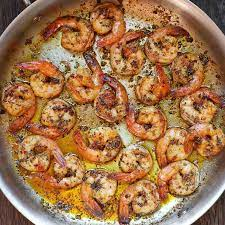
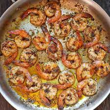
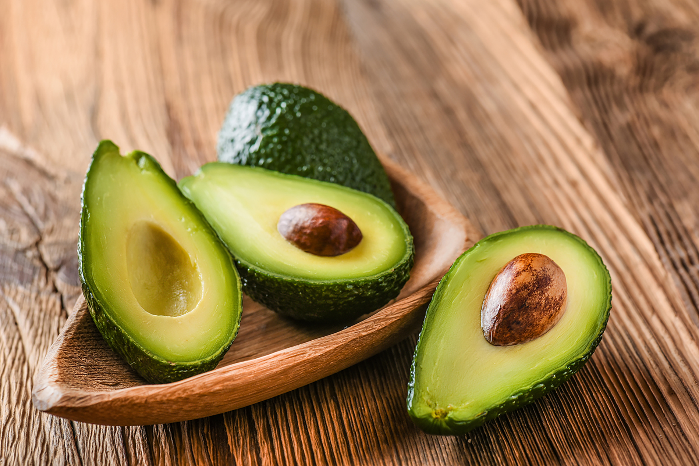
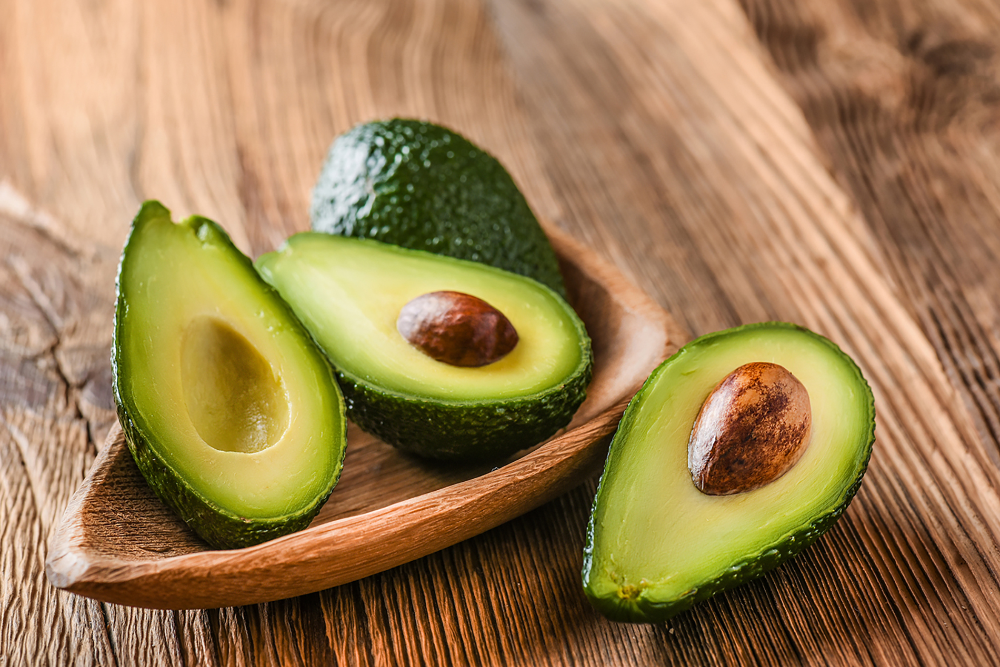

Recipes
Shrimp Scampi
Origin: Italian Source: NYTimes Category: Main dish
Shrimp scampi is a classic Italian-American delight, where succulent shrimp meet a medley of garlic, butter, and white wine. Sautéed to pink perfection, the shrimp mingle with a fragrant blend of garlic and red pepper flakes. A drizzle of white wine and a squeeze of lemon create a luxurious sauce, embracing the dish's linguine base. With a sprinkle of parsley, it's a harmonious, flavorful
Recipe Ingredients
- 2 tablespoons butter
- 2 tablespoons extra-virgin olive oil
- 4 garlic cloves, minced
- ½ cup dry white wine or broth
- ¾ teaspoon kosher salt, or to taste
- ⅛ teaspoon crushed red pepper flakes, or to taste
- Freshly ground black pepper
- 1¾ pounds large or extra-large shrimp, shelled
- ⅓ cup chopped parsley
- Freshly squeezed juice of half a lemon
- Cooked pasta or crusty bread
Recipe Steps
- In a large skillet, melt butter with olive oil.
- Add garlic and sauté until fragrant, about 1 minute.
- Add wine or broth, salt, red pepper flakes and plenty of black pepper and brnig to simmer
- Let the wine reduce by half, about 2 minutes.
- Add shrimp and sauté until they just turn pink, 2 to 4 minutes depending upon their size.
- Stir in the parsley and lemon juice serve over pasta or accompanied by crusty bread.
- Slice the avocado and lay those on the top of the dish
Additional Food images
 

Sushi Bake
Origin: Asian Source: Own Recipe Category: Main dish
Do you want easy, quick way to enjoy sushi without having to do all of the work? Try to make our sushi bake, which takes 10 minutes to assemble and 20 minutes to bake in the oven. Our recipe feeds 8 people.
Recipe Ingredients
- 1 avocado
- 1/2 cup soon sauce
- 2 cups of rice
- 1 tablespoon of rice vinegar
- 3 tablespoons of mayo
- 1 8 oz package of imitation crab
- 1 medium piece of salmon
- 1 cucumber
- 3 tablespoons of sriracha
Recipe Steps
- Preheat oven to 350 degrees
- Make rice. Mix rice vinegar into rice after it is cooked
- Lay out all of the rice at the bottom of a large baking dish
- Lay out the imitation crab and cucumber on top of the rice
- Mix the imitation crab and 2 TBSP mayo into a crab salad
- Smear the crab salad onto the next layer
- Slice the avocado and lay those on the top of the dish
- Pour the rest of the mayo and sriracha on top
- Bake for 20 minutes
- Enjoy!
Additional Food images
 

Dutch Baby Pancake
Origin: Washington Source: Own Recipe Category: Main dish
An eggy sweet pancake. Tastes and smells like nutmeg and sugar. Rises with heat and falls elsewhere. Is essentially a giant crepe.
Recipe Ingredients
- ½ cup flour
- ¼ cup sugar
- ⅛ teaspoon nutmeg
- 3 eggs
- ⅔ cup milk
- ¼ oil
Recipe Steps
- Preheat oven to 425 degrees
- Put pan in oven with the oil
- Mix dry ingredients
- Mix eggs and milk
- Mix all together
- Let it sit for ten minutes
- Put in oven for 14 minutes
- Enjoy!
Additional Food images